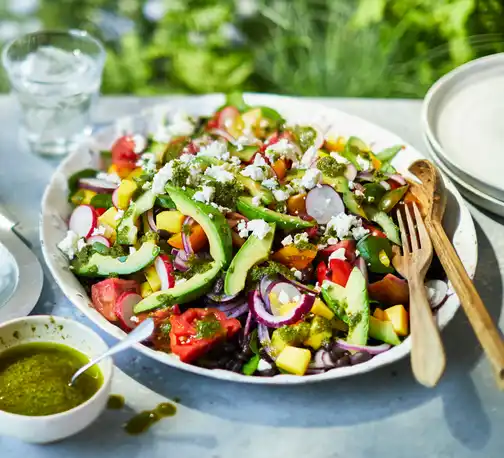

Modular Salad

Description
Possibly the most versatile of all potential recipes in the multiverse, the one, the only, SALAD. Salad consistents of 4 elements: greens,
protien, dressing, and the extras. These can all very to an extreme degree, so the possibilites are essentially endless. We'll go more into depth on these later on.
Ingredients
- greens
- protien
- dressing
- extras
Steps
- Gather your ingredients.
- In terms of greens, the amount of options is immense. Good options are spinach, kale, or iceburg lettuce.
- Meats are always a good protien, as can be tofu, hummus, or beans.
- I'm partial to italian, ceasar, and especially balsamic viniagrette.
- I'm fond of bacon bits, cheese (feta, bleu, cheddar, provalone),